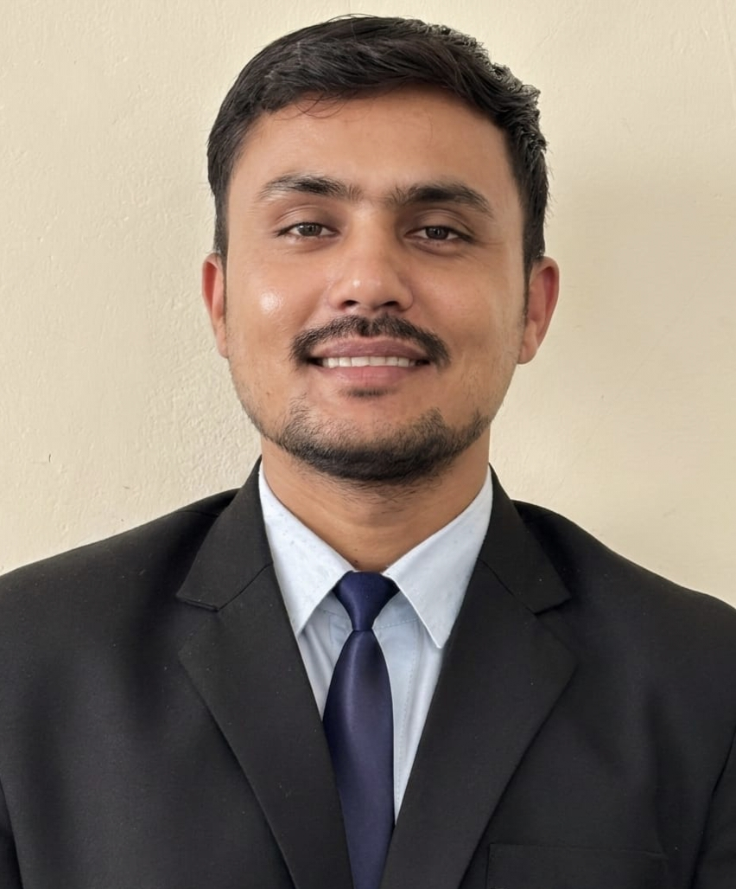

MBA Specialization — Finance & Business Analytics
I am Ashish Tiwari, an MBA student specializing in Finance & Business Analytics. I am highly interested in Data Analyst and Business Analyst roles, and passionate about solving business problems using data-driven insights. I enjoy turning raw data into actionable insights that support better business decisions, and I bring hands-on experience from internships in business analysis and operations.
MBA, Finance & Business Analytics — Indus Business Academy, Bangalore (2025-2027)
B.Sc — Madhya Pradesh Bhoj Open University (2017-2021)
Class XII — Saraswati Shishu Mandir, Madhya Pradesh Board (2016-2017) - 78%
Class X — Saraswati Shishu Mandir, Madhya Pradesh Board (2014-2015) - 73%
Role - Management Trainee Company Name - Shriram General Insurance Pvt. Ltd
Role - Business Analyst Company Name - Slash Mark
1) Project - ECOFLUENCE 3.0
Overview: Worked as a Data Analyst on a college live project where the task was to clean and validate a dataset of 2000+ rows by correcting inconsistent entries and removing unreliable records.
Result: Improved overall data quality and reliability, making the dataset suitable for accurate analysis and reporting.
2) Project - MARKET SURVEY
Overview: Conducted a marketing survey on sustainability and green product usage across hospitality and healthcare sectors using a structured questionnaire provided by faculty.
Result: Analysed consumer awareness and preferences, and presented key findings on eco-friendly product adoption trends to faculty.
Technical:
Excel Power BI SQL Python
Business Skills:
Business Analysis Data Analysis Insight Analysis Presentation
Soft Skills:
Problem Solver Team Player Leadership Analytical Reasoning